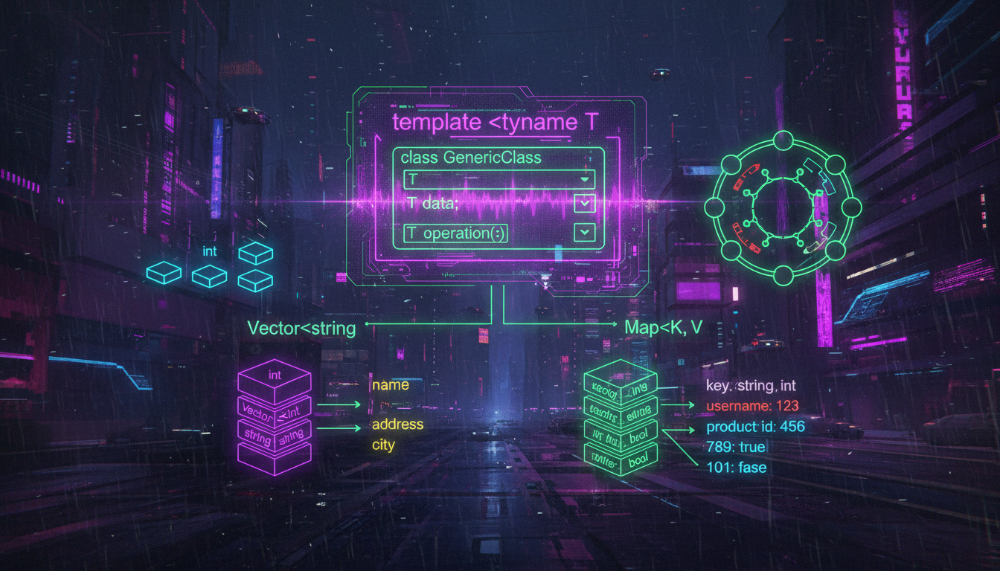

template class, параметри шаблону, спеціалізація

Шаблон класу дозволяє створювати узагальнені класи, що працюють з будь-якими типами даних.
#include <iostream>
template <typename T>
class Stack {
private:
T* data;
int capacity;
int top;
public:
Stack(int cap = 100) : capacity(cap), top(-1) {
data = new T[capacity];
}
~Stack() {
delete[] data;
}
void push(T value) {
if (top < capacity - 1) {
data[++top] = value;
}
}
T pop() {
if (top >= 0) {
return data[top--];
}
return T(); // Значення за замовчуванням
}
bool isEmpty() const {
return top == -1;
}
};
int main() {
Stack<int> intStack;
intStack.push(10);
intStack.push(20);
std::cout << intStack.pop() << std::endl; // 20
std::cout << intStack.pop() << std::endl; // 10
Stack<std::string> stringStack;
stringStack.push("Hello");
stringStack.push("World");
std::cout << stringStack.pop() << std::endl; // World
return 0;
}